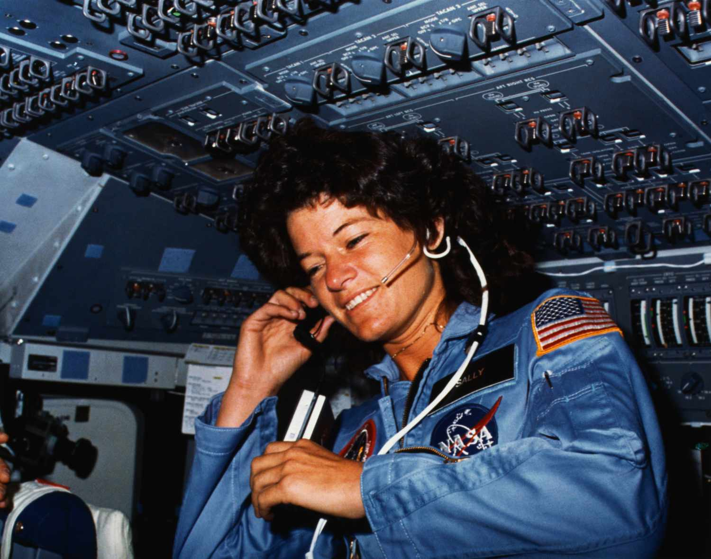
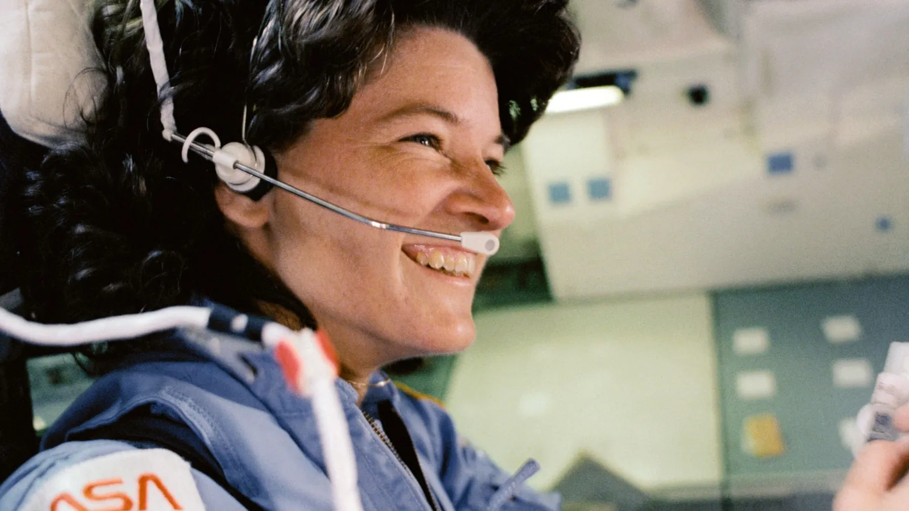
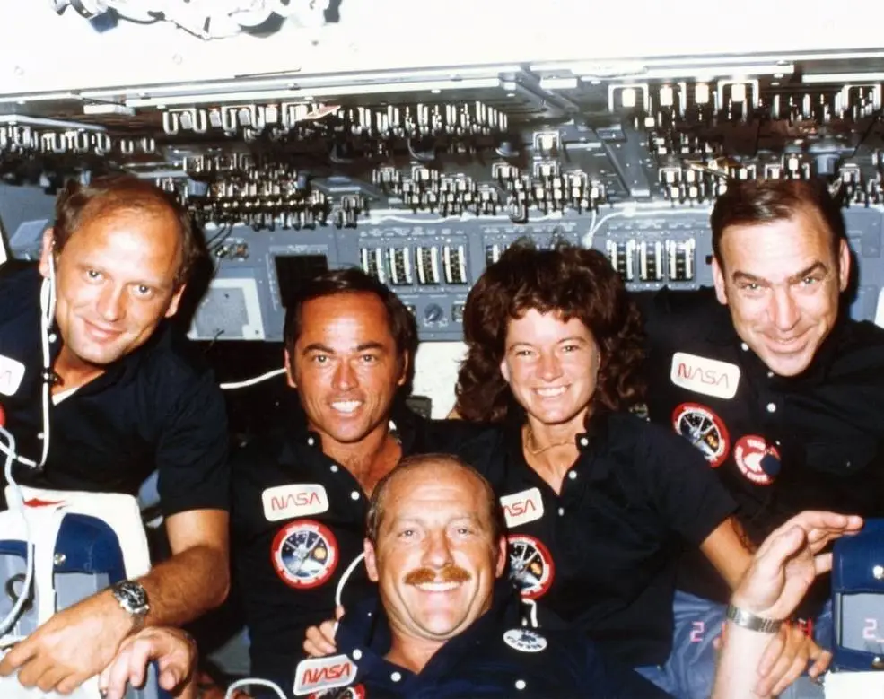

Born in Los Angeles, USA, in 1951, Ride managed to turn her childhood interest in science, sparked in part by a chemistry set, into a highly successful professional career in the fields of science, technology, engineering, and mathematics (STEM). Although she almost pursued a career in tennis (she was a national-level player while studying at Swarthmore College and later at Stanford University), the young Ride opted for a career in astrophysics.
Ride was finishing her doctorate at Stanford when she saw the newspaper ad that would change her life and the history of spaceflight. NASA was recruiting for its 1978 class, and for the first time, women were being invited to apply.
Although women had already been in space (Soviet cosmonaut Valentina Tereshkova had paved the way in 1963), NASA had long resisted the idea of female astronauts. In the early 1960s, 13 women participated in a privately funded program designed to test whether women could succeed in space. But, although the group passed the same tests as NASA astronauts, the “Women in Space” program was abandoned in 1962.

Sally Ride and her fellow astronauts kept their heads down and did their best to avoid attention. Five years later, after mastering various behind-the-scenes roles in mission control and helping to develop the International Space Station's robotic arm, Ride was chosen as a crew member for the STS-7 mission, a flight carried out in June 1983 aboard the space shuttle Challenger.
Meanwhile, the media bombarded her with frivolous questions. “Everyone wanted to know what kind of makeup I was wearing; they didn’t care how well prepared I was to handle the arm or deploy communications satellites,” Ride told feminist leader and political activist Gloria Steinem in a 1983 interview.
Despite the pressure, Ride's first flight, a six-day satellite deployment and recovery mission, was a success, landing at Edwards Air Force Base on June 24, 1983. So was her second mission, an eight-day flight in 1984. And although Ride's third flight was canceled after the loss of the Challenger, she continued working for NASA.
She retired from NASA in 1989 and became a physics professor at the University of California, San Diego, and director of the UC San Diego Space Institute. Later, she founded her own company, Sally Ride Science, designed to encourage girls and women to pursue careers in science, technology, engineering, and mathematics (STEM).

Ride rompió barreras en vida y en muerte. El 23 de julio de 2012, falleció de cáncer de páncreas a los 61 años, y el obituario que había preparado antes de su muerte incluía una línea sobre su relación de 27 años con una mujer, su socia Tam O'Shaughnessy.
Salir del armario durante su vida “no parece que se le ocurriera y, sin duda, habría puesto en peligro su oportunidad de ir al espacio, si no la hubiera eliminado por completo”, escribió Ann Friedman para The American Prospect, señalando que, hasta 1990, siete años después de que Ride fuera al espacio por primera vez, la NASA había tomado medidas para descalificar a personas del programa espacial en función de su orientación sexual. Aunque esa norma nunca se aprobó y la agencia cuenta ahora con una oficina dedicada a sus empleados LGBTQ, nunca ha habido un astronauta abiertamente LGBTQ.
En 2013, Ride recibió a título póstumo la Medalla Presidencial de la Libertad de manos del presidente estadounidense Barack Obama. Sin embargo, ha habido otras mujeres estadounidenses en el espacio, más de 40, y en 2019, las astronautas estadounidenses completaron una histórica caminata espacial íntegramente femenina.
